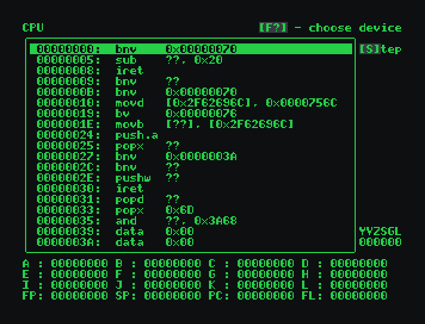

This is the documentation for the luisavm project.
luisavm is an emulator for a fictional computer. This computer is in the same style as a 80s computer (like Commodore 64 or MSX) but with modern computer amenities, such as a much faster microprocessor and almost "infinite" RAM and video memory.
This emulator has several uses:
luisavm is still in development, and at this stage is basically unusable. However, all the information in this documentation is correct and already implemented.
Installation is simply a matter of running:
$ make
# make install
If Lua is installed, the unit tests can be run with
$ make test
The luisavm emulator can be run with the following syntax:
luisavm [OPTIONS] [ROMFILE]
where the options are:
| Short option | Long option | Description | Default value |
|---|---|---|---|
-m |
--memory |
Amount of physical RAM avaliable, in kB | 4 kB |
-z |
--zoom |
Amount of zoom in the display | 2 |
-h |
--help |
Display help for the executable |
The ROMFILE parameter can be used to load a ROM file into the memory.
The code will be loaded in position 0x0 of the memory.
In the current version, luisavm will start directly with the debugger.
luisavm has two kinds of memory: logical and physical memory.
Logical memory is a virtual area of memory which can be used to access the memories of all devices. All memory access happens through the logical memory.
The logical memory has 4 Gb of addressable space, from 0x0 to
0xFFFF_FFFF. Devices are mapped into the logical memory in the following
arrangement:
| 0x0000_0000 | Physical memory (RAM) |
| ? | Inaccessible area (depends on RAM size) |
| 0xF000_0000 | Device area |
The physical memory (RAM) is accessible from the logical position starting in
0x0. The device area starts at 0xF000_0000, although there
are no devices with memory yet.
The luisavm has a custom 32-bit CPU. The CPU is little-endian and has 16 32-bit registers:
| Number | Register | Pourpose |
|---|---|---|
0x0 | A | General pourpose registers |
0x1 | B | |
0x2 | C | |
0x3 | D | |
0x4 | E | |
0x5 | F | |
0x6 | G | |
0x7 | H | |
0x8 | I | |
0x9 | J | |
0xA | K | |
0xB | L | |
0xC | FP | Frame pointer (used for recursive functions) |
0xD | SP | Stack pointer (points to the top of the stack) |
0xE | PC | Program counter (points to the next instruction) |
0xF | FL | Flags (see below) |
The CPU architecture is orthogonal - that is, any instruction can operate on any register.
The FL registers contains a set of flags that are affected by different
operations. Each flag in one bit in the register:
| Bit | Flag | Event |
|---|---|---|
0 | Y | Last instruction caused a carry |
1 | V | Last instruction caused a overflow |
2 | Z | Last instruction's result was zero |
3 | S | Last instruction's result was under zero (that is: the 31th bit was set) |
4 | GT | Last comparison instruction was greater than |
5 | LT | Last comparison instruction was less than |
Each instruction in memory is formed by the instruction itself (first byte) and the parameters. The parameters can go from 1 to 4 bytes in length, and there are at most two parameters per instruction. Therefore, a instruction can be from 1 to 9 bytes in length.
The parameters can be one of the following types:
mov B, C copies
the value in the register C to the register B;
add J, 0x1234
will sum 0x1234 to the register J;
K contains 0xABCD,
the instruction mov A, [K] will set the value of the
register A to the value stored in memory position
0xABCD;
mov8 F, [0x1234]
will get the value in memory position 0x1234 and copy it
to the register F.
The table below presents the instruction set:
| Group | Opcode | Instruction | Parameters | Description | Pseudocode |
|---|---|---|---|---|---|
| Movement | 0x01 |
mov |
reg, reg | Moves data from one location to the other | dest = origin |
0x02 | reg, v8 | ||||
0x03 | reg, v16 | ||||
0x04 | reg, v32 | ||||
0x05 |
movb |
reg, indreg | Moves 8-bit data from one location to the other | dest = (8bit)origin |
|
0x06 | reg, indv32 | ||||
0x07 | indreg, reg | ||||
0x08 | indreg, v8 | ||||
0x09 | indreg, indreg | ||||
0x0A | indreg, indv32 | ||||
0x0B | indv32, reg | ||||
0x0C | indv32, v8 | ||||
0x0D | indv32, indreg | ||||
0x0E | indv32, indv32 | ||||
0x0F |
movw |
reg, indreg | Moves 16-bit data from one location to the other | dest = (16bit)origin |
|
0x10 | reg, indv32 | ||||
0x11 | indreg, reg | ||||
0x12 | indreg, v16 | ||||
0x13 | indreg, indreg | ||||
0x14 | indreg, indv32 | ||||
0x15 | indv32, reg | ||||
0x16 | indv32, v16 | ||||
0x17 | indv32, indreg | ||||
0x18 | indv32, indv32 | ||||
0x19 |
movd |
reg, indreg | Moves 32-bit data from one location to the other | dest = (32bit)origin |
|
0x1A | reg, indv32 | ||||
0x1B | indreg, reg | ||||
0x1C | indreg, v32 | ||||
0x1D | indreg, indreg | ||||
0x1E | indreg, indv32 | ||||
0x1F | indv32, reg | ||||
0x20 | indv32, v32 | ||||
0x21 | indv32, indreg | ||||
0x22 | indv32, indv32 | ||||
0x23 |
swap |
reg, reg | Swap the values of the registers | t = par1; par1 = par2; par2 = t |
|
| Logic | 0x24 |
or |
reg, reg | Logical OR instruction | dest |= origin |
0x25 | reg, v8 | ||||
0x26 | reg, v16 | ||||
0x27 | reg, v32 | ||||
0x28 |
xor |
reg, reg | Logical XOR instruction | dest ^= origin |
|
0x29 | reg, v8 | ||||
0x2A | reg, v16 | ||||
0x2B | reg, v32 | ||||
0x2C |
and |
reg, reg | Logical AND instruction | dest &= origin |
|
0x2D | reg, v8 | ||||
0x2E | reg, v16 | ||||
0x2F | reg, v32 | ||||
0x30 |
shl |
reg, reg | Shift n bytes left | dest <<= origin |
|
0x31 | reg, v8 | ||||
0x32 |
shl |
reg, reg | Shift n bytes right | dest >>= origin |
|
0x33 | reg, v8 | ||||
0x34 |
not |
reg | Invert the value in the registers (NOT operator) | par = ~par |
|
| Arithmetic | 0x35 |
add |
reg, reg | Arithmetic sum. Set the flag Y in case of carry. |
dest += origin + Y |
0x36 | reg, v8 | ||||
0x37 | reg, v16 | ||||
0x38 | reg, v32 | ||||
0x39 |
sub |
reg, reg | Arithmetic subtraction. Set the flag Y in case of carry. |
dest -= origin + Y |
|
0x3A | reg, v8 | ||||
0x3B | reg, v16 | ||||
0x3C | reg, v32 | ||||
0x3D |
cmp |
reg, reg | Perform a subtraction, but does not set the result, only the flags. This is the only instruction that sets the flags GT and LT. |
[flags] = dest - origin |
|
0x3E | reg, v8 | ||||
0x3F | reg, v16 | ||||
0x40 | reg, v32 | ||||
0x41 | reg | ||||
0x42 |
mul |
reg, reg | Multiply two numbers. Sets the V flag (overflow) it the result is above 32 bits. |
dest *= origin |
|
0x43 | reg, v8 | ||||
0x44 | reg, v16 | ||||
0x45 | reg, v32 | ||||
0x46 |
idiv |
reg, reg | Perfoms an integer division. | dest //= origin |
|
0x47 | reg, v8 | ||||
0x48 | reg, v16 | ||||
0x49 | reg, v32 | ||||
0x4A |
mod |
reg, reg | Calculate the modulo of two numbers. | dest %= origin |
|
0x4B | reg, v8 | ||||
0x4C | reg, v16 | ||||
0x4D | reg, v32 | ||||
0x4E |
inc |
reg | Increment the value in the register by one | ++par |
|
0x4F |
dec |
reg | Decrement the value in the register by one | --par |
|
| Branches | 0x50 |
bz |
reg | If Z flag is set, jump to instuction in parameter. |
if (Z) PC = par |
0x51 | v32 | ||||
0x52 |
bnz |
reg | If Z flag is not set, jump to instuction in parameter. |
if (!Z) PC = par |
|
0x53 | v32 | ||||
0x54 |
bneg |
reg | If S flag is set, jump to instuction in parameter. |
if (S) PC = par |
|
0x55 | v32 | ||||
0x56 |
bpos |
reg | If S flag is not set, jump to instuction in parameter. |
if (!S) PC = par |
|
0x57 | v32 | ||||
0x58 |
bgt |
reg | If GT flag is set, jump to instuction in parameter. |
if (GT) PC = par |
|
0x59 | v32 | ||||
0x5A |
bgte |
reg | If GT and Z flag is set, jump to instuction in parameter. |
if (GT && Z) PC = par |
|
0x5B | v32 | ||||
0x5C |
blt |
reg | If LT flag is set, jump to instuction in parameter. |
if (LT) PC = par |
|
0x5D | v32 | ||||
0x5E |
blte |
reg | If LT and Z flag is set, jump to instuction in parameter. |
if (LT && Z) PC = par |
|
0x5F | v32 | ||||
0x60 |
bv |
reg | If V flag is set, jump to instuction in parameter. |
if (V) PC = par |
|
0x61 | v32 | ||||
0x62 |
bnv |
reg | If V flag is not set, jump to instuction in parameter. |
if (!V) PC = par |
|
0x63 | v32 | ||||
0x64 |
jmp |
reg | Unconditionally jumps to instruction in parameter. | PC = par |
|
0x65 | v32 | ||||
0x66 |
jsr |
reg | Jump to subroutine: stores the next instruction in the stack, and jump to location | push(PC); PC = par |
|
0x67 | v32 | ||||
0x68 |
ret |
reg | Return from subroutine: pops value from stack and jump to it | PC = pop() |
|
| Stack operations | 0x6A |
pushb |
reg | Push one byte into the stack | [SP] = par; SP -= 1
|
0x6B | v8 | ||||
0x6C |
pushw |
reg | Push one word (two bytes) into the stack | [SP] = par; SP -= 2
| |
0x6D | v16 | ||||
0x6E |
pushd |
reg | Push one double-word (four bytes) into the stack | [SP] = par; SP -= 4
| |
0x6F | v32 | ||||
0x70 |
push.a |
Push all registers (except FP, SP, PC and FL) into the stack | for(i = 0..11) push(reg[i]) |
||
0x71 |
popb |
reg | Pop one byte from the stack, and store it in the register | par = [SP]; SP += 1 |
|
0x72 |
popw |
reg | Pop one word (two bytes) from the stack, and store it in the register | par = [SP]; SP += 2 |
|
0x73 |
popd |
reg | Pop one double-word (four bytes) from the stack, and store it in the register | par = [SP]; SP += 4 |
|
0x74 |
pop.a |
Pop all registers (except FP, SP, PC and FL) from the stack | for(i = 11..0) reg[i] = pop() |
||
0x75 |
popx |
reg | Pop n bytes from the stack, discarding them | SP += 4
| |
0x76 | v8 | ||||
0x77 | v16 | ||||
| Others | 0x78 |
nop |
Does nothing for one cycle | /* do nothing */ |
|
0x7A |
dbg |
Enter the debugger. Use as a breakpoint for debugging applications. | debugger() |
A debugger is avaliable for stepping through guest code and seeing the internals of the devices. When luisavm is started, the debugger is started automatically.
The keys for controlling the keyboard are:
| Key | Funtion |
|---|---|
| F1 | Debug CPU using source file |
| F2 | Debug CPU |
| F3 | Debug logical memory |
| F4 | Debug physical memory |
| G | Go to specific location |
| S | Step one cycle in the VM (CPU debugger only) |
An assembler is not yet available. Code must be written byte by byte, like in the old days...
There are currently no guest applications available.
luisavm is avaliable as a library called libluisavm.so.
This library can be used to embed the emulator in other applications. Useful
functions are:
LVM_Computer* lvm_computercreate(uint32_t physical_memory_size, bool debugger_active);
void lvm_computerdestroy(LVM_Computer* comp);
LVM_CPU* lvm_addcpu(LVM_Computer* comp);
typedef struct VideoCallbacks {
void (*setpal)(uint8_t idx, uint8_t r, uint8_t g, uint8_t b);
void (*clrscr)(uint8_t color);
void (*change_border_color)(uint8_t color);
uint32_t(*upload_sprite)(uint16_t w, uint16_t h, uint8_t* data);
void (*draw_sprite)(uint32_t sprite, uint16_t pos_x, uint16_t pos_y);
} VideoCallbacks;
void lvm_setupvideo(LVM_Computer* comp, VideoCallbacks cbs);
uint8_t lvm_get(LVM_Computer* comp, uint32_t pos)
void lvm_step(LVM_Computer* comp, size_t force_time_us);
bool lvm_loadromfile(LVM_Computer* comp, const char* filename)
Other functions are available in the file luisavm.h. An example
application follows:
int main(int argc, char* argv[])
{
// initialize computer
LVM_Computer* computer = lvm_computercreate(16, false);
lvm_addcpu(computer);
if(argc > 1) {
lvm_loadromfile(computer, argv[1]);
}
initialize_my_graphical_library();
lvm_setupvideo(computer, (VideoCallbacks) {
my_setpal,
my_clrscr,
my_change_border_color,
my_upload_sprite,
my_draw_sprite,
});
// main loop
while(my_window_is_open()) {
lvm_step(computer, 0);
my_update_graphics();
}
// finalization
lvm_computerdestroy(computer);
}
A more complete example application can be found in src/main.c.
This is the code for the official luisavm emulator.